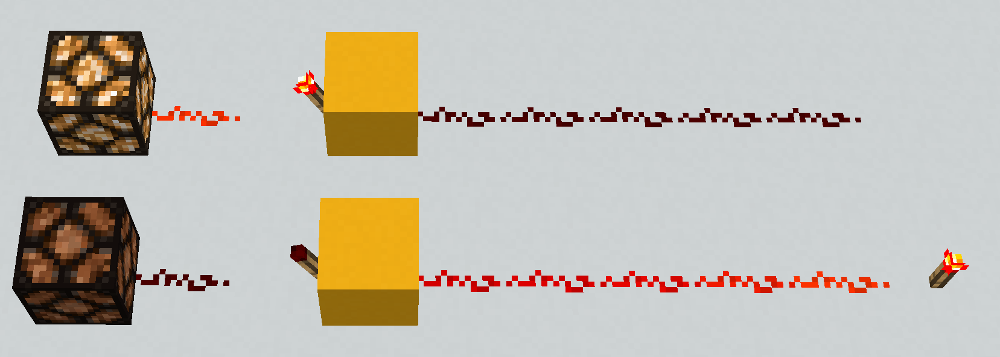

Redstone torch v inventáři.
Redstone torch je blok z kategorie redstone, funkcí obdobný logickému hradlu NOT - invertoru. Pokud je napájen blok na který je položena, změní svůj stav za 2gt (0.1s) na stav vypnuto a naopak pokud je napájení přerušeno opět se za 2gt rozsvítí a funguje jako zdroj napětí o síle 15.
